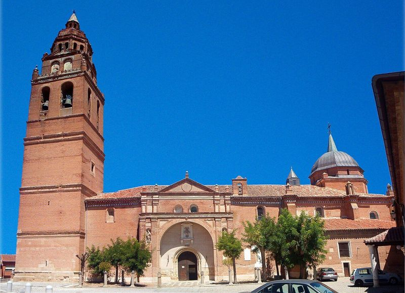
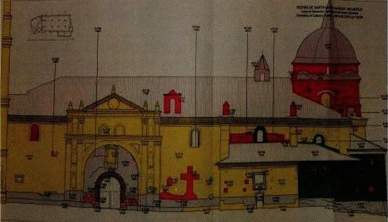
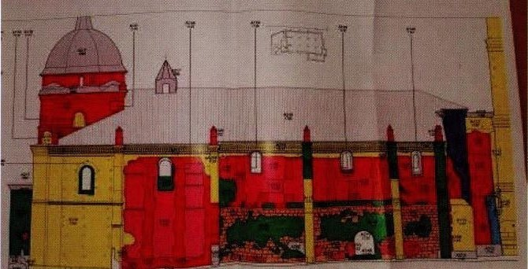
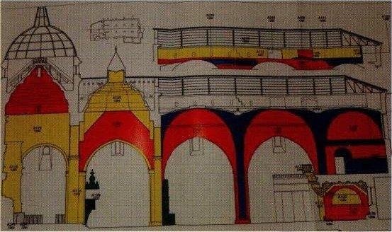
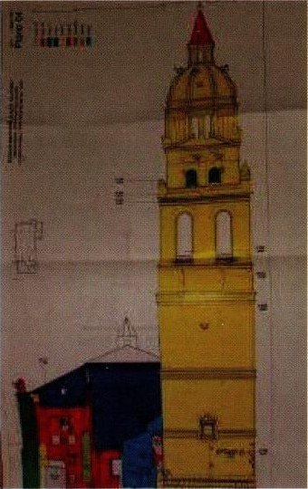
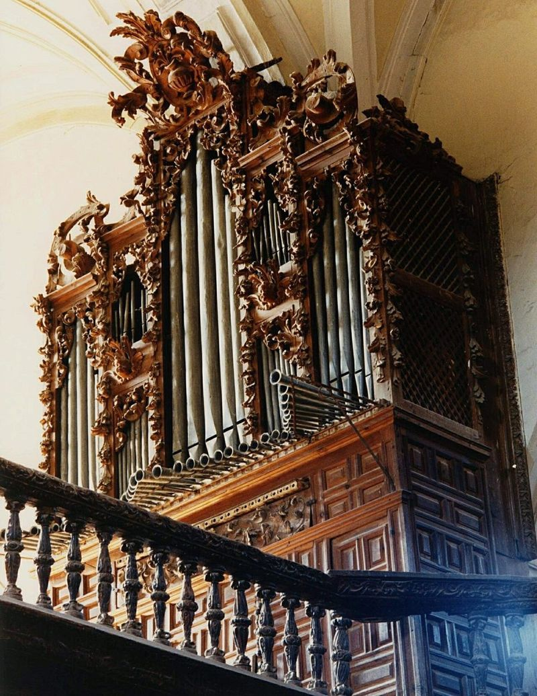
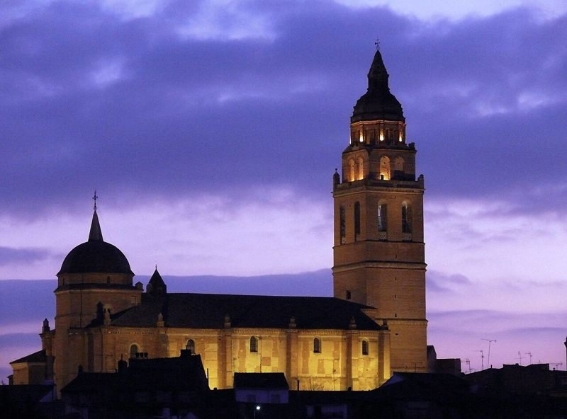
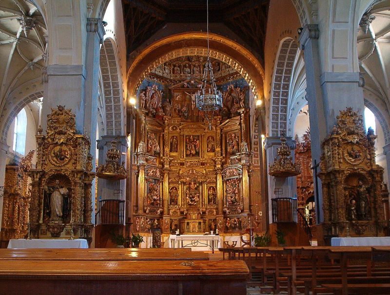
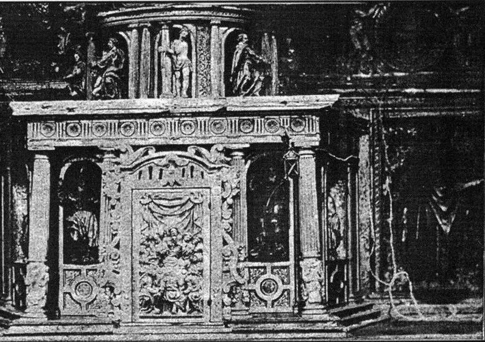

Iglesia de Santa María
Iglesia parroquial de Santa María y Museo Interparroquial de Arte Sacro.
En esta página (11 apartados · 20 min de lectura)

La iglesia de Santa María de la Asunción se alza en la plaza de su nombre, a pocos minutos de la Plaza Mayor y San Pedro. Es una obra de ladrillo del Renacimiento con tradición constructiva mudéjar y añadidos barrocos. Sigue abierta al culto y guarda además el Museo Interparroquial de Arte Sacro, con piezas de las dos parroquias de la villa.
Historia de la obra
Gracias a los libros de fábrica de la parroquia y a un estudio arqueológico del edificio encargado por la Junta de Castilla y León, la historia de Santa María es la mejor conocida de las dos iglesias. La resumió José M. Baraja en el programa de fiestas de 2020 («Santa María»), y de él procede lo que sigue mientras no se diga otra cosa.
La iglesia vieja
El templo actual se levantó sobre otro anterior, gótico, del que se conservan dos lienzos de muro de sillería de arenisca dentro de los muros norte y sur. El del sur mide treinta metros y coincide con la puerta principal. Desde que se le quitó el enfoscado, parte de él se ve junto a la portada. Aquella iglesia tenía la cabecera al oeste, al revés que la actual. Junto a la torre se conserva un gran machón de muro que pudo pertenecer a la antigua muralla de la villa o servir de base al campanario viejo. También la pila bautismal, labrada en una sola pieza de piedra, se tiene por resto del templo primitivo.
La iglesia nueva (1565-1605)
Según el historiador Javier Castán Lanaspa, la obra nueva empezó hacia 1565, probablemente porque la iglesia vieja era modesta y había quedado dañada en la guerra de las Comunidades. El primer asiento de los libros de fábrica es del 8 de marzo de 1588. Esos libros, ocho volúmenes que llegan hasta 1851, se guardan en el Archivo Diocesano de Valladolid. En el último tercio del siglo XVI se alargó y elevó el edificio: se aprovecharon los muros viejos, se trasladó la cabecera al este y se levantaron muros nuevos de cajones de adobe entre verdugadas de ladrillo. A finales de siglo se terminaron las naves laterales y la envoltura exterior de ladrillo, rematada con una cornisa con banda de azulejos blancos y azules.




En los alzados del estudio arqueológico, cada color marca una fase: en marrón, los muros de la iglesia gótica primitiva; en verde claro, lo que se aprovechó y reforzó de ellos; en rojo, la ampliación del último tercio del siglo XVI; en amarillo, la terminación de finales de ese siglo; en azul oscuro, las obras de finales del XVII y comienzos del XVIII; y en verde oscuro, las del XVIII y XIX.
Al mismo tiempo se hizo la carpintería. Según Felipe Heras García, el coro lo construyó en 1585 el carpintero Alonso Calvo, con la intervención de Bartolomé Hernández y Pedro Rojas, y el bajo coro es de 1588, obra de Andrés de Santana, Gaspar y Sebastián García. En 1589 se contrató el retablo mayor, en 1590 se hicieron los dos púlpitos, y la torre se terminó en 1605.
Siglos XVII y XVIII
Hacia 1620 se construyó la primera sacristía y, sobre la portada vieja de la fachada sur, el gran pórtico, con un balcón encima. A finales del siglo XVII y comienzos del XVIII se alargó la nave central unos tres metros hacia el oeste para ampliar el coro y se rehicieron las bóvedas de las tres naves. En 1682 se fundieron la campana grande y algunas menores.
El siglo XVIII vistió el interior, que hasta entonces había estado casi desnudo salvo la cabecera y el coro. Entre 1735 y 1738 se construyó la sacristía actual, cubierta con bóveda de cañón con lunetos y yeserías, y en 1740 el camarín y los tornavoces de los púlpitos. Llegaron también los retablos de las naves y el órgano, y se entarimó el suelo con tablones de hasta tres metros y medio clavados con clavos de forja. En el siglo XIX se reforzaron los contrafuertes del lado oeste y se rehízo la puerta norte. En total, la iglesia tardó unos dos siglos en quedar completa, por dentro y por fuera, pagada en su mayor parte por los vecinos.




El edificio
Es una iglesia de planta de salón, con tres naves de altura semejante y una cabecera poligonal poco profunda. En el primer tramo de la nave de la Epístola están la sacristía y el camarín. Los dos primeros tramos y la sacristía vieja se cubren con bóvedas de crucería nervada, de tradición gótica, sobre pilastras jónicas acanaladas. Más adelante se pasa a bóvedas de arista y de cañón con lunetos: es la huella de las distintas fases de la obra.
Por fuera la recorren recios contrafuertes, arquillos bajo la cornisa y bandas de azulejos. En el siglo XVIII se añadió un gran contrafuerte en la esquina de la cabecera con la nave del Evangelio, que deja un paso en arco por debajo, para contener el empuje de las bóvedas.
La portada es de tradición gótica, con un relieve de la Asunción y el nombre de la Virgen en letra de la época. El pórtico que la protege se abre en un gran arco de medio punto, y en sus hornacinas hay esculturas del siglo XVII de san Pedro, san Cristóbal y san Pablo.
Las armaduras mudéjares
Lo más valioso de la arquitectura de Santa María está en los techos de madera. Sobre la capilla mayor hay una armadura ochavada dorada y policromada, con un friso de bustos de santos y otro amplio de mocárabes. Sobre el crucero se abre una gran cúpula octogonal de madera con linterna, sin policromar.


Un estudio publicado en 2022 en la revista Informes de la Construcción, del CSIC, analizó la armadura de la capilla mayor. Concluye que quien la hizo contrató al mismo tiempo la armadura y el retablo mayor, y que era un carpintero ensamblador, más acostumbrado a los retablos que a las armaduras. Por eso, al montarla, tuvo que doblar algunas piezas maestras y reforzarla con herrajes.
El dorado de la armadura está documentado. En 1604 los «cuatros» de la iglesia, los feligreses que la gobernaban, se concertaron con el pintor Francisco Martínez para «dorar el retablo y zínborrio de la dicha yglesia». Lo publicó José Ojeda Nieto en el programa de 2012. Según Baraja, Martínez pintó también las pinturas murales laterales de la capilla mayor.
En el coro alto se conserva un frontal de madera de lado a lado, con talla plateresca de grutescos, medallones y bustos. El techo del sotocoro imita con molduras de madera los nervios de una bóveda de crucería. Bajo el coro están el acceso, una capilla a modo de coro bajo y el baptisterio, cerrado con balaustrada de madera.
En el coro alto está también el órgano, barroco, de mediados del siglo XVIII, con la trompetería dispuesta en forma de uve doble y un teclado de 45 teclas. En 2020 no se podía tocar.



La torre
Está a los pies de la iglesia, en el lado de la Epístola, y es toda de ladrillo macizo. Tiene cuatro cuerpos que disminuyen hacia arriba y una ochava cubierta con cúpula de ocho paños, linterna y cupulín. La hizo el alarife alaejano Simón González, y según Felipe Heras García el remate se terminó en 1605. Es el único maestro de obras con nombre propio que conocemos para cualquiera de las dos torres de la villa.
Francisco José Rodríguez Carracedo la describía así en 1991: está hecha de ladrillo sobre pie de piedra y tiene cuatro cuerpos de superficie lisa; encima, otro cuerpo cuadrado con frontones partidos en cada frente, «a modo de fachadas», con frisos y antepechos adornados con azulejos de varios colores, y, para coronarla, un ochavo barroco de dobles arquerías con cúpula, linterna y cupulín cónico. Ya se habían desprendido los adornos vidriados que había sobre las crestas de ladrillos escalonados. Según él, esta torre sirvió de modelo a la de San Pedro y a otras de la zona occidental de la provincia, como las de Siete Iglesias de Trabancos, Torrecilla de la Orden y los Santos Juanes de Nava del Rey (Rodríguez Carracedo, 1991, pág. 24).




_(2).jpg){kind=link}
La torre ha dado trabajo desde el principio. Almudena Ojeda Torrero recogió en el programa de 2015 los apuntes de los libros de cuentas sobre arreglos. En la mañana del 9 de febrero de 1830 los vecinos vieron «la cruz de la torre de Santa María toda ladeada», y se contrató a los hermanos José y Bernabé Ojeda para enderezarla.
Lo que guarda
El retablo mayor
Es la obra de arte mejor documentada de las dos iglesias. Dedicado a la Asunción de María, lo contrató en 1589 el escultor Esteban Jordán, uno de los grandes nombres de la escultura castellana del siglo XVI. Según las cuentas que publicó Agapito y Revilla, el precio fue de 3.300 ducados. Se labró en Valladolid y se trajo después a Alaejos. Jordán murió en 1598 sin terminarlo. En 1600 lo tasó el escultor salmantino Juan de Montejo, y el 14 de marzo de 1604 el ensamblador Cristóbal Velázquez se comprometió a rematar lo que faltaba, con la ayuda del escultor Francisco del Rincón. A Rincón se deben los Cristos de los dos óvalos y los ángeles de detrás del Calvario.
El 26 de febrero de 1604 el pintor vallisoletano Francisco Martínez firmó el contrato para dorarlo y policromarlo en tres años, por 3.000 ducados. Un artículo del programa de 2003 recuerda que los artistas que trabajaban en el retablo preferían cobrar en vino de Alaejos antes que en monedas. El historiador Juan José Martín González lo tuvo por «la obra más fina, más aseada y también menos conocida» de Jordán. Lo recoge Mario García Guerras en el programa de 2010.



Sigue el modelo de retablo que Gaspar Becerra había fijado en Astorga y es una versión reducida del de Santa María de Mediavilla, en Medina de Rioseco, que le sirvió de modelo. Tiene banco, dos cuerpos con tres calles, la central el doble de ancha, y ático. Se cuentan en él al menos ciento treinta figuras talladas. En el banco están la Anunciación y la Visitación, y en el centro la custodia entre san Pedro y san Pablo. En los cuerpos aparecen la Adoración de los pastores y la de los Reyes, el Abrazo ante la Puerta Dorada, Jesús entre los doctores, san Francisco, santa Catalina y, en el centro, la Asunción y Coronación. En lo alto están el Calvario con los dos ladrones, el Ecce Homo, Cristo con la cruz a cuestas y Dios Padre.
Martín González consideraba la custodia o sagrario, ya citada en 1594, lo mejor del retablo, por su rareza y su calidad. En 1952 todavía conservaba sus nueve estatuillas, entre ellas un Cristo atado a la columna y los evangelistas. Hoy han desaparecido todas.


La sacristía, según Francisco José Rodríguez Carracedo, tiene dos salas y un camarín, con excelentes yeserías barrocas en los techos y una cajonería de nogal, también barroca, del siglo XVIII (pág. 25).
Los retablos del siglo XVIII
Según la cronología de Baraja (2020), estos son los retablos de las naves:
- Nave del Evangelio: san Miguel (1727, barroco), la Inmaculada (1777, rococó), el Cristo de la Salud (1798, neoclásico), la Virgen del Pilar y san Isidro.
- Nave de la Epístola: la Virgen de las Angustias (1736, barroco), san Antonio de Padua, santa Bárbara y la Virgen de Belén.
- Nave central: san Vicente Ferrer y san José con el Niño, ambos de la primera mitad del siglo.
De dos de ellos sabemos quién los pagó, gracias a los escudos que los rematan. Los estudió Felipe de Perlines Carretero en los programas de 2018 y 2022:
- San Miguel Arcángel. Según la inscripción, el retablo se hizo a expensas de Manuel de Perlines Ebán y de su mujer, Feliciana de Bustamante. Ella murió en 1727 y fue enterrada «en la peana del altar que hizo a San Miguel». La escultura del arcángel es del escultor Alejandro Carnicero, según la tesis de Virginia Albarrán Martín.
- San Antonio de Padua. Lo costeó el presbítero Manuel de Perlines y Porres, beneficiado de Santa María. La talla del santo, que el inventario de 1989 daba a Luis Salvador Carmona, la atribuye hoy Albarrán Martín a Alejandro Carnicero.
El museo de arte sacro
El Museo Interparroquial de Arte Sacro reúne escultura, pintura, orfebrería, tejidos y marfiles de Santa María y de San Pedro. La orfebrería se guarda en la cámara acorazada de la base de la torre, de sillares de piedra bien escuadrados. Lo explica Adolfo M. Araújo en el programa de 2010. Algunas de sus piezas:
- La custodia rica de Santa María, de plata sobredorada, con los evangelistas en la base y una imagen de la Virgen en el templete. Durante años se relacionó con el platero Baltasar Romano. Javier Castán Lanaspa encontró en los libros parroquiales el contrato: la labró el platero vallisoletano Francisco de San Román, que lo firmó el 20 de marzo de 1560 y se comprometió a entregarla para Pentecostés. Lo cuenta Araújo en el programa de 1998. Hoy, en la procesión del Corpus, sale la custodia neogótica de San Pedro.
- La Virgen Morena, una Virgen con el Niño de madera dorada y policromada de finales del siglo XIV o comienzos del XV, según la profesora Ara Gil. Estuvo en el altar de la Santísima Trinidad y en algún momento se serró en dos piezas.
- Un Cristo crucificado de marfil, italianizante, del siglo XVII, con cruz chapeada de ébano, que estuvo en el camarín de Jesús Nazareno. Estas dos piezas las describió Araújo en el programa de 1984.
- Las guías citan además un brazo relicario de santa Ana, un Cristo filipino de marfil del siglo XVIII, una cruz parroquial de plata sobredorada del XVI procedente de San Pedro y dos lienzos atribuidos a Luca Giordano.
Protección
Santa María es monumento desde hace casi un siglo: el Decreto de 3 de junio de 1931 la declaró monumento histórico-artístico del Tesoro Artístico Nacional (Gaceta de Madrid de 4 de junio de 1931). Desde la Ley de Patrimonio Histórico de 1985 tiene la consideración de bien de interés cultural, con categoría de monumento.
Arreglos y restauraciones
Los libros de cuentas cuentan una larga lucha contra las goteras. En 1676 amenazaban ruina el remate y la veleta del chapitel que cubre la capilla mayor, con riesgo de que se hundiera «el artesonado de la capilla mayor, que es muy rico». En 1807 estaban podridas las maderas del tejado de la nave central y del crucero. La Junta de Fábrica tuvo que pedir ayuda al cabildo, a la Universidad de Salamanca y a la duquesa de Veragua, que cobraban los diezmos. El problema no se resolvió hasta 1910, cuando se sustituyó la armadura exterior de madera por una de hierro, contratada con Ángel López. Así quedó protegida de la lluvia la talla policromada del presbiterio.
En 1990 se restauraron las cúpulas y el artesonado. En la primavera de 2001, sin embargo, la iglesia estaba cerrada al culto tras el derrumbe parcial de uno de sus muros, y Jaime Caballero Hernández acusaba de desidia a la Junta de Castilla y León, responsable de un monumento nacional; por entonces el Patronato de la Ruta del Mudéjar acababa de iluminar las dos torres (Caballero Morante, Alaejos, del sepia al color, 2001). Hacia 2005 una plaga de termitas puso en peligro la madera del templo; se pudo contener, aunque todavía en 2015 se veían sus efectos en la cubierta. Ese mismo año Almudena Ojeda Torrero denunciaba en el programa de fiestas el mal estado de la torre y las grietas de la cabecera.
Entre 2016 y 2017 la Junta de Castilla y León restauró los cuerpos altos de la torre, dentro de un convenio con el Arzobispado y el Ayuntamiento y con fondos europeos FEDER. La obra la hizo la empresa Estudio Métodos de la Restauración, con proyecto de los arquitectos Jorge Silva Uribarri y Vicente Muñoz Pascual. Se repararon los muros, se cambiaron los azulejos y los suelos y se rehízo el escalonado de ladrillo de la cúpula y del remate. Ese remate lo había dañado un rayo, y una reparación anterior había hecho desaparecer el escalonado original. Según la nota de prensa de la Junta, esta puso 217.551 euros, el Arzobispado 40.000 y el Ayuntamiento 20.000.
Las campanas
Según la recopilación de los últimos campaneros publicada en el programa de 2025 («Campanas de Alaejos y sus toques»), la torre de Santa María tiene la Gorda, la Nueva, la Asistencia, el esquilón del Cristo, un esquilón pequeño y la campanilla del Viático. Esta última cuelga de una pequeña espadaña en la fachada, a la derecha del arco de entrada.
Adolfo M. Araújo encontró un inventario de la iglesia del 20 de marzo de 1808, que ya cita la campana Grande, de unas cien arrobas, la Nueva, de cincuenta, la de la Asistencia, de treinta, el esquilón del Cristo, de doce, y dos pascualejas. Subió después a la torre y leyó sus inscripciones (programa de 1990):
- La Gorda lleva el nombre de «Santísima Asunción de María» y la firma de los fundidores Acebo y Gargallo. No se le vio fecha.
- La Nueva es de 1800, obra de Pedro Ruiz, y se hizo siendo párroco Leonardo Santana Cachero.
- Otras dos llevan las fechas de 1784, con el nombre de Manuel Ballesteros y Lastra, y de 1789.
Una campana de la torre, «muy especial, de grandes dimensiones y con un sonido inconfundible», tiene su propio dicho, que recoge Francisco José Rodríguez Carracedo (1991, págs. 24-25):
María de la O me llamo,
veinte quintales peso;
quien no me crea,
que me coja a peso.
Algunos toques eran solo de Santa María: el de misa en la ermita, el de la misa de Jesús Nazareno del primer viernes de marzo y el toque «a rau» de la víspera de santa Bárbara. Las vísperas del 9 de mayo y del 7 de septiembre se tocaba a pino con la Gorda. A los difuntos de la hermandad del Cristo de la Salud se les tocaba a muerto con la Gorda y la Nueva y después con el esquilón del Cristo.
Dos iglesias, una parroquia
Durante siglos Alaejos tuvo dos parroquias. Santa María era la de más raigambre: le correspondían tres de cada cinco partes de los diezmos, y San Pedro dos. En la misma proporción se repartían los gastos comunes y los beneficiados: quince y diez en el siglo XVII, doce y ocho en el XVIII. Hasta el siglo XIX el pueblo ejercía el derecho de patronato. Los feligreses, a través de sus «cuatros», gobernaban los bienes de cada iglesia y presentaban a los beneficiados, que tenían que ser hijos de la parroquia. El cura se elegía cada dos años, el día de los Inocentes, por votación secreta del cabildo: en 1610 salió elegido en Santa María Clemente Salamanqués, con once papeletas. Así lo cuenta José Ojeda Nieto en el programa de 2012.
Hasta 1885 cada vecino podía además elegir a qué parroquia pertenecer, viviera donde viviera. Para cambiar de parroquia había que «desavecindarse», ausentándose del pueblo un año entero o, ya en el siglo XVI, solo durante las tres Pascuas. En 1885 el obispado fijó por calles la línea que dividía las dos feligresías: todo lo que quedaba a un lado era de Santa María, y lo del otro, de San Pedro. Hoy hay una sola parroquia, la de Santa María y San Pedro, aunque algunas celebraciones se siguen haciendo en la iglesia de cada antigua parroquia. Lo explica Noé León en el programa de 2025.
En la Plaza Mayor, frente a San Pedro, se conserva la Casa de los Beneficiados de Santa María, de la primera mitad del siglo XVIII, donde vivía el clero de esta parroquia. En Santa María fue bautizado en 1638 Manuel Arias de Porres, que llegó a presidir el Consejo de Castilla y fue arzobispo de Sevilla y cardenal; su retrato estuvo en la sacristía.
Vida de la parroquia
En Santa María se celebra uno de los ritos más antiguos de la Semana Santa alaejana. El Miércoles Santo, los hermanos del Cristo de la Salud bajan la imagen, lavan sus llagas con vino y reparten ese vino entre los enfermos y los fieles. En la iglesia se celebran también la bendición de ramos del Domingo de Ramos y la misa de la Cena del Señor del Jueves Santo, en la que se lava los pies a doce hermanos de esa cofradía. La novena a la Virgen de los Dolores abre cada año la Semana Santa.
Para seguir leyendo
- Francisco José Rodríguez Carracedo, «El arte religioso en la villa de Alaejos», en José Ojeda Nieto, Alaejos, apuntes histórico-artísticos (Valladolid, Diputación, 1991), págs. 23-28. Se cita con autorización de los autores; las fotografías de 1991 proceden del mismo libro.
- En la biblioteca de los programas de fiestas: «Santa María» (2020), «Del altar mayor de Santa María» (2010), «La iglesia de Santa María: arreglos y reparaciones» (2015) y «Una pieza de orfebrería sacra de la época de Felipe II» (1998).
- Decreto de 3 de junio de 1931: Gaceta de Madrid.
- Estudio de la armadura de la capilla mayor en Informes de la Construcción (CSIC, 2022).
- Sobre el retablo mayor y la capilla mayor, el blog Arte en Valladolid.
- Ficha de la restauración de la torre en la web de obras de la Junta de Castilla y León.
- Fotografías y visita virtual en Arte y Patrimonio, y fotografías de libre uso en Wikimedia Commons.
Cómo citar esta página
Amigos de Alaejos, «Iglesia de Santa María», https://www.amigosdealaejos.org/patrimonio/iglesia-de-santa-maria/ (revisión del 21/11/2026).